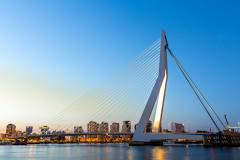
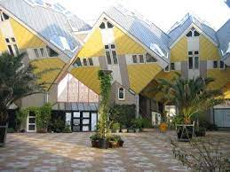

De Erasmusbrug
De Erasmusbrug is naast de Willemsbrug de tweede brug over de Nieuwe Maas in het centrum van de Nederlandse stad Rotterdam. Hij is vernoemd naar de Nederlandse priester en humanist Erasmus. De brug verbindt de wijk Kop van Zuid met het centrum aan de noordzijde van de rivier.

De Kubuswoningen
De Kubuswoning, ook wel paal- of boomwoning genoemd, is een ontwerp van architect Piet Blom. Hij wilde een soort dorp in de grote stad te ontwerpen, waarbij hij de huizen zag als bomen en het hele complex als een bos. Dit uitgangspunt verklaart ook meteen de naam Blaakse Bos. De kubussen zijn als het ware gekanteld, waardoor drie zijdes naar de grond gericht zijn en drie naar de hemel. Op de (verkeersvrije) promenade onder de kubuswoningen bevinden zich kleinschalige bedrijven, winkels, een school en een speelruimte voor kinderen.